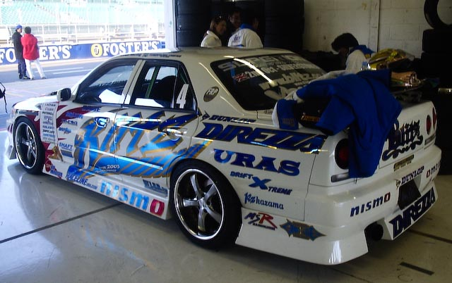

JDM is one of the biggest sub communitys within car culture. Along with this comes a lot of pop culture appearances. This page will go through some of the most popular shows / movies in jdm. As well as talking about some important figures in JDM.
Initial D is one of the biggest pop culture icons in JDM. Initial D originally was a manga series by Shuichi Shigeno.It was quite popular and it ended up being made into a anime series (Japanese cartoon). Initial D is about Takumi Fujiwara, A teenage boy who drive his father Toyota AE86 through the akina mountain pass. He learns the road and learns how to drift. He eventually joins his friends touge racing team and travels around the gunma region battling others.
Touge racing is racing that is very popular in the Japanese night scene. The name is derived from touge, meaning pass in japansese. The way these races work is that one person starts and the other follows. if at any point the person following overtakes, and keeps the lead until the end of the race they win. Touge racing is quite dangerous, however some people station people on both ends of the pass to ensure no other cars come up the road. Initial D popularized alot of famous cars such as the RX7 and the AE86 and will be a cornerstone of JDM for years to come.
"The Fast and the Furious: Tokyo Drift" (2006) is the third installment in the Fast & Furious franchise, directed by Justin Lin. This film shifts the focus to the vibrant world of Japanese street racing, showcasing a unique subculture within the car community. The story follows Sean Boswell, a teenager who relocates to Tokyo to avoid jail time and quickly immerses himself in the high-stakes world of drift racing—a technique that emphasizes controlled skidding around corners. The movie highlights iconic Japanese domestic market (JDM) cars like the Nissan Silvia, Mazda RX-7, and the Mitsubishi Lancer Evolution, celebrating their pivotal role in both the racing scene and pop culture. Through thrilling action sequences and a deep dive into Tokyo’s underground racing scene, "Tokyo Drift" pays homage to JDM car culture and solidifies its influence in global pop culture.
Keiichi Tsuchiya, the "Drift King," is a pivotal figure in JDM car culture known for popularizing drifting. His mastery of this driving technique and his promotion of cars like the Toyota AE86 have significantly influenced both Japanese and global motorsports. Tsuchiya’s legacy endures through his contributions to car culture and his role as a mentor and media personality.
Ken Nomura, often known as “Nomuken,” is a notable figure in the JDM scene. As a professional drifter and car tuner, Nomura has made significant contributions to the popularity of drifting and the modification of Japanese cars. He is recognized for his skills with cars like the Nissan Silvia and has been influential in both competitive drifting and tuning communities in Japan and beyond
